무선설비기사 (2010-10-10 기출문제)
1과목: 디지털 전자회로
1. π형 필터에 비해 L형 필터에 대한 특징으로 틀린 것은?
- 전압 변동률이 적다.
- 역전압이 높다.
- 정류 소자 전류가 연속적이다.
- 정류 소자를 이용하기 용이하다.
(정답률: 66%)

2. 다음과 같은 블록도에서 출력으로 나타나는 파형이 적합한 것은?
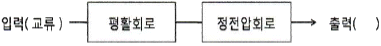
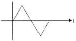
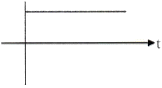
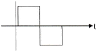
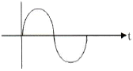
(정답률: 85%)
3. 증폭기에서 발생하는 일그러짐(Distortion) 현상이 아닌 것은?
- 비직선 일그러짐
- 잡음(Noise)
- 주파수 일그러짐
- 위상 일그러짐
(정답률: 73%)
4. 달링톤 접속을 이용한 이미터 플로워이다. 전압이득(AV)을 구하시오. (단, Q1, Q2의 hie=3[kΩ], hre=100, hoe=20[μs]이다.) (문제 오류로 실제 시험에서는 모두 정답처리 되었습니다. 여기서는 1번을 누르면 정답 처리 됩니다.)
- 0.99
- 0.98
- 0.97
- 0.96
(정답률: 79%)
5. 다음 증폭기 회로에서 RE가 증가하면 어떤 현상이 일어나는가?
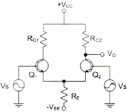
- 차동이득이 감소한다.
- 차동이득이 증가한다.
- 동상이득이 감소한다.
- 동상이득이 증가한다.
(정답률: 74%)
6. 다음 증폭기 회로에서 최대 전력 소비 정격은 약 얼마인가?
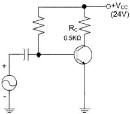
- 0.1[W]
- 0.3[W]
- 0.5[W]
- 1.0[W]
(정답률: 45%)
7. 바크하우젠 발진조건에 대한 설명 중 옳은 것은? (단, A는 증폭기의 이득, β는 궤환율)
- Aβ<1이면 발진이 크게 일어난다.
- Aβ>1이면 발진이 일어나지 않는다.
- Aβ=1이면 일정한 진폭의 교류출력이 발생한다.
- Aβ>1이면 발진은 되나 잘림 현상이 발생한다.
(정답률: 83%)
8. 병렬저항형 이상형 발진회로에서 1.6[kHz]의 주파수를 발진하는데 필요한 저항 값은 약 얼마인가? (단, C=0.01[μF])
- 2[KΩ]
- 4[KΩ]
- 6[KΩ]
- 8[KΩ]
(정답률: 75%)
9. 진폭변조 회로에서 반송파전력 PC 를 변조율 m[%]로 변조했을 때, 피변조파 전력 pm 을구하는 식은?
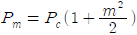
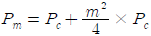
- Pm=Pc×m
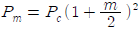
(정답률: 76%)
10. M진 QAM의 대역폭 효율은?
- 비트에러율÷전송대역폭
- 비트율÷전송대역폭
- 비트율×전송대역폭
- 비트에러율×전송대역폭
(정답률: 56%)
11. 정보비트의 전송률이 일정할 때 QPSK의 채널 대역폭이 5,000[Hz]라면 16진 PSK의 채널 대역폭은?
- 1.25[kHz]
- 2.5[kHz]
- 5[kHz]
- 80[kHz]
(정답률: 54%)
12. 전기회로의 응답 펄스에서 새그(sag)가 생기는 이유는 무엇인가?
- 높은 주파수 성분에 공진하기 때문에
- 증폭기의 저역 특성이 나빠서
- 콘덴서의 방전 작용 때문에
- 낮은 주파수 성분이나 직류분이 잘 통하지 않기 때문에
(정답률: 56%)
13. 슬라이서 회로에 대한 설명 중 틀린 것은?
- 입력 파형의 일부분을 제거할 수 있다.
- 입력 파형으 상하 두 레벨 사이의 진폭을 꺼내는 회로이다.
- 정현파를 삼각파로 만들고자 할 때 사용한다.
- 입력 파형의 윗부분과 아래 부분을 동시에 잘라내는 회로이다.
(정답률: 66%)
14. 10진수 8을 excess-3로 변환하면?
- 1000
- 1001
- 1011
- 1111
(정답률: 67%)
15. 논리식 A(A+B+C)를 간단히 하면?
- A
- 1
- 0
- A+B+C
(정답률: 87%)
16. 다음 계수기(counter)의 명칭 중 맞는 것은?
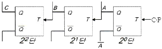
- 상향 4진 계수기
- 하향 4진 계수기
- 상향 8진 계수기
- 하향 8진 계수기
(정답률: 78%)
17. 다음 중 동기형 계수기로 사용할 수 없는 것은?
- Ripple 계수기
- BCD 계수기
- 2진 업다운 계수기
- 2진 계수기
(정답률: 57%)
18. 다음 진리표를 만족시키는 회로는?
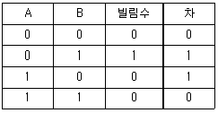
- AND gate
- EOR gate
- 반감산기
- 전감산기
(정답률: 70%)
19. 1의 보수기는 어떤 회로를 사용하는가? (문제 오류로 실제 시험에서는 1, 2번이 정답처리 되었습니다. 여기서는 1번을 누르면 정답 처리 됩니다.)
- 일치 회로
- 반일치 회로
- 감산 회로
- 가산 회로
(정답률: 79%)
20. 플립플롭은 몇 개의 안정 상태를 갖는가?
- 1
- 2
- 4
- ∞
(정답률: 79%)
2과목: 무선통신 기기
21. AM 검파기에 필요한 조건이 틀린 것은?
- 일그러짐이 적을 것
- 동조회로의 Q가 저하되지 않도록 입력 저항이 작을 것
- 주파수 특성이 양호할 것
- 회로가 간단할 것
(정답률: 64%)
22. 다음 중 주파수 체배기에 주로 사용되는 증폭기의 바이어스 방법은?
- A급
- B급
- AB급
- C급
(정답률: 61%)
23. 중간주파 증폭부에서 중간주파수를 높게 설정할 때의 특징이 아닌 것은?
- 인입현상 영향 개선
- 전송대역 주파수 특선 개선
- 영상 주파수 관계 개선
- 근접 주파수 선택도 개선
(정답률: 64%)
24. 광대역 FM의 변조지수가 10인 경우 AM에 비해 SNR이 몇 배나 증가하는가?
- 200
- 300
- 400
- 500
(정답률: 59%)
25. 다음 그림은 어떤 변조 방식의 블록도를 나타내는 것인가? (단, m(t)는 입력정보이고, fc는 반송주파수이다.)
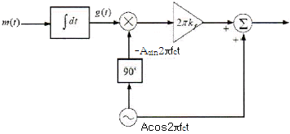
- 협대역 각변조(narrow band PM)
- 협대역 주파수변조(narrow band FM)
- DSB-TC
- VSB
(정답률: 67%)
26. 영상 주파수를 개선하기 위한 방법 중 틀린 것은?
- 중간주파수를 낮게 정함으로써 영상주파수에 의한 혼신을 감소시킨다.
- 특정한 영상주파수에 대한 Trap 회로를 입력회로에 넣는다.
- 고주파 증폭단을 두고 동조회로 Q를 크게 한다.
- 고주파 증폭단을 증설한다.
(정답률: 55%)
27. 다음 그림은 입력신호에서 주파수와 위상을 추출하는 위상동기루프(PLL)를 나타낸다. 괄호에 들어가는 내용의 조합으로 적절한 것은?
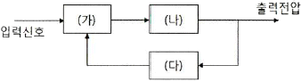
- (가) 위상검출기 (나) 저역통과 필터 (다) 전압제어 발진기
- (가) 위상검출기 (나) 전압제어 발진기 (다) 저역통과 필터
- (가) 전압비교기 (나) 고역통과 필터 (다) 전압제어 발진기
- (가) 전압비교기 (나) 전압제어 발진기 (다) 저역통과 필터
(정답률: 72%)
28. 채널간 간섭 등 급격한 위상 변화에 의한 문제들을 해결하기 위해 QPSK의 위상을 연속적으로 변하도록 하는 변조방식은?
- BPSK
- PSK
- MPSK
- MSK
(정답률: 63%)
29. QAM 신호는 정보데이터에 의하여 반송파의 무엇을 변경하여 얻는 신호인가?
- 주파수
- 위상
- 진폭
- 위상과 진폭
(정답률: 82%)
30. 구형파에서 펄스폭을 τ, 펄스주기를 T, 주파수를 f , 펄스의 첨두치를 P, 평균치를 A 라고 하면 충격 계수(duty factor) D 의 관계가 틀린 것은?(오류 신고가 접수된 문제입니다. 반드시 정답과 해설을 확인하시기 바랍니다.)
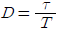
- D=τT
- D=Af
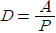
(정답률: 68%)
31. 다음 중 충전의 종류가 아닌 것은?
- 속충전
- 저충전
- 균등충전
- 부동충전
(정답률: 79%)
32. 과충전을 적용하는 시기로 잘못된 것은?
- 규정 용량 이상으로 방전을 하였을 때
- 방전 후 즉시 충전을 하였을 때
- 축전지를 오랫동안 사용하지 않고 방치하였을 때
- 극판에 백색 황산납이 생겼을 때
(정답률: 69%)
33. AM 송신기의 전력측정 방법이 아닌 것은?
- 공중선의 실효 저항에 의한 측정
- 볼로미터 브리지에 의한 전력측정
- 의사 공중선을 사용하는 방법
- 전구 부하에 의한 방법
(정답률: 78%)
34. 콘덴서 입력형 평활회로의 정류기를 사용하다가 갑자기 과전류가 흐르고 맥동률이 증가하였다. 이 때 회로의 고장진단에 나타난 현상은?
- 입력주파수가 증가하였다.
- L값이 크게 변하였다.
- 부하 쪽에 있는 콘덴서가 단락되었다.
- 부하 임피던스가 크게 높아졌다.
(정답률: 61%)
35. 입력에 고주파 케이블을 사용한 수신기의 감도를 출력임피던스가 50[Ω]인 신호발생기를 사용하여 측정하고자 할 때 수신기의 입력단자에 연결한 방법은?
- 신호발생기와 50[Ω]의 직렬회로로 연결
- 신호발생기만 연결
- 신호발생기와 75[Ω]의 병렬회로로 연결
- 저항 75[Ω] 연결
(정답률: 55%)
36. 급전선상에 반사파가 없을 때 전압 정재파비는 얼마가 되는가?
- 0
- 1/2
- 1
- ∞
(정답률: 73%)
37. 다음은 이동통신 망운용을 위한 측정장비에 대한 사용 설명이다. 빈칸에 공통으로 들어갈 측정장비 이름으로 맞는 것은?
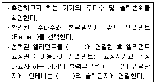
- 파워 미터(power meter)
- 스펙트럼 분석기(spectrum analyzer)
- 코드 영역 분석기(code domain analyzer)
- 네트워크 분석기(network analyzer)
(정답률: 65%)
38. 정류회로에서 평균값을 지시하는 가동코일형 직류 전압을 측정하였더니 100[V], 실효값을 지시하는 전류력계형 전압계를 이용하여 교류 전압을 측정하였더니 2[V]였다. 리플율은 몇 [%] 인가?
- 1
- 2
- 4
- 10
(정답률: 61%)
39. 전지의 내부저항을 측정하기 위해 사용되는 브리지는?
- 맥스웰(Maxwell) 브리지
- 헤이(Hey) 브리지
- 헤비사이드(Heaviside) 브리지
- 코올라우시(Kohlrausch) 브리지
(정답률: 74%)
40. 다음 중 정류회로의 종류가 아닌 것은?
- 반파 정류회로
- 전파 정류회로
- 평활회로
- 배전압 정류회로
(정답률: 75%)
3과목: 안테나 공학
41. 다음 중 거리에 따라 가장 감쇠가 급격하게 발생하는 것은 어느 것인가?
- 정전계
- 정자계
- 복사전계
- 복사자계
(정답률: 74%)
42. 급전선에 요구되는 사항으로 틀린 것은?
- 전송효율이 높을 것
- 특성임피던스가 높을 것
- 절연내력이 클 것
- 유도방해를 받거나 주지 말 것
(정답률: 80%)
43. 스미스 도표에서 굵게 표시된 원이 의미하는 것은 무엇인가?
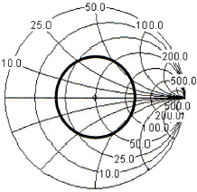
- 동일한 전류값
- 동일한 정재파비
- 동일한 어드미턴스
- 동일한 전압값
(정답률: 79%)
44. 비동조 급전선의 특징이 아닌 것은?
- 송신기와 안테나의 거리가 가까울 경우에 사용한다.
- 평형형이나 불평형형 급전선 모두 사용할 수 있다.
- 급전선상에 진행파를 실어서 급전한다.
- 정합장치가 필요하고 전송효율이 좋다.
(정답률: 57%)
45. 전송선로의 특성 임피던스 Z0=50-j15[Ω]이고, 이 전송선로에 부하 임피던스 ZL=30+j60[Ω]가 연결되었을 때, 선로의 전압정재파비(VSWR)는 약 얼마인가?
- 12
- 14
- 16
- 18
(정답률: 54%)
46. 구형 도파관 내에 전파 에너지가 전송시 나타나는 현상 중 틀린 것은?
- 신호 에너지는 관벽에서 위상 반전된다.
- 2회 반사로 원위치되므로 위상 반전은 별 문제되지 않는다.
- 차단 파장 λc는 장변 a의 2배 즉, λc=2a로 표시된다.
- 차단 파장보다 신호 파장이 클 때, 도파관은 에너지를 전송한다.
(정답률: 33%)
47. 절대이득의 기준 안테나는?
- 무손실 접지 안테나
- 무손실 루프 안테나
- 무손실 등방성 안테나
- 무손실 다이폴 안테나
(정답률: 73%)
48. 안테나 Q(Quallity Factor)의 파라미터에 해당하지 않는 것은?
- 선택도
- 첨예도
- 양호도
- 안정도
(정답률: 44%)
49. 50[Ω]의 무손실 전송선로에서 부하 임피던스 ZL=50-j65[Ω]이다. 이 때 입력전력이 100[mW]이면 부하에 의해 소모되는 전력은 얼마인가?
- 67[mW]
- 70[mW]
- 73[mW]
- 77[mW]
(정답률: 40%)
50. 자유공간에 있는 반파장 다이폴 안테나의 최대복사방향으로 5[km]인 지점에서의 전계강도가 5[mW/m]일 때 안테나의 방사 전력은?
- 7.50[W]
- 10.25[W]
- 12.75[W]
- 17.25[W]
(정답률: 58%)
51. 안테나 손실저항 중 코로나 손실에 대한 설명으로 맞는 것은?
- 코로나 방전 등에 의해 생기는 손실
- 안테나 지시물이나 안테나 주변의 유도체에 의한 고주파 손실
- 대지와 안테나와의 접촉저항
- 안테나 주변의 도체내에 유기되는 고주파와 전류에 의한 손실
(정답률: 74%)
52. 단파대역의 기본안테나는?
- 역L형 안테나
- T형 안테나
- λ/4 수직접지 안테나
- λ/2 Doublet 안테나
(정답률: 59%)
53. 배열안테나에서 안테나간의 위상차를 주기 위한 소자는?
- 이상기(Phase Shifter)
- 아이솔레이터(Isolator)
- 감쇄기(Attenuator)
- 마그네트론(Magnetron)
(정답률: 66%)
54. 트래픽 증가에 따른 대처 기술과 가장 거리가 먼 것은?
- 주파수 재사용
- 주파수 할당기술
- 주파수 분배기술
- 기지국 치국기술
(정답률: 55%)
55. 초단파 및 극초단파가 가시거리 이상까지 전파하는 원인에 해당되지 않는 것은?
- 산악회절 현상에 의한 원거리 전파
- 전리층 투과에 의한 원거리 전파
- 라디오 덕트에 의한 원거리 전파
- 스포라딕 E층에 의한 원거리 전파
(정답률: 60%)
56. 전리층의 높이를 측정할 때 주로 사용되는 파형은?
- 정현파
- 3각파
- 변측파
- 펄스파
(정답률: 82%)
57. 겉보기 높이가 2배가 될 때 도약거리의 변화는?
- 불변
- 0.5배
- 2배
- 4배
(정답률: 54%)
58. 페이딩과 이에 대한 방지 대책으로 적절하지 못한 것은?
- 원거리 간섭성 페이딩은 공간 다이버시티를 사용하여 줄일 수 있다.
- 흡수성 페이딩은 수신기에 AGC를 사용하여 줄일 수 있다.
- 선택성 페이딩은 주파수 다이버시티를 사용하여 줄일 수 있다.
- 도약성 페이딩은 MUSA 방식을 사용하여 줄일 수 있다.
(정답률: 64%)
59. 무선통신 시스템에서 공전으로 인한 잡음을 경감시키기 위한 대책으로 적합하지 못한 것은?
- 지향성이 예민한 안테나를 사용한다.
- 다이버시티 수신기법을 이용한다.
- 수신기의 선택도를 높이도록 한다.
- 진폭제한회로가 부가된 수신기를 설치한다.
(정답률: 63%)
60. 분포 정수 회로에 의한 임피던스 정합 방법에 해당하는 것은? (문제 오류로 실제 시험에서는 1, 2 ,3 번이 정답처리 되었습니다. 여기서는 1번을 누르면 정답 처리 됩니다.)
- 테이퍼 정합
- Y형 정합
- T형 정합
- 저지투관(sperrtopf)
(정답률: 72%)
4과목: 무선통신 시스템
61. 안테나 이득을 절대이득(dBi)으로 표시할 때 기준으로 하는 안테나는 어느 것인가?
- 등방성 안테나
- 반파장 다이폴 안테나
- 야기 안테나
- 파라볼라 안테나
(정답률: 69%)
62. 장파대용 무선 시스템에서 지표파의 전계강도가 가장 큰 곳은?
- 평야
- 산악
- 시가지
- 해상
(정답률: 75%)
63. 다음 중 재생 중계기의 기능에 해당하지 않는 것은?
- 등화증폭(Reshaping)
- 리타이밍(Retiming)
- 식별재생(Regeneration)
- 신호재생(Reaction)
(정답률: 52%)
64. 위성통신시스템의 구성 중 지구국 장비에 해당하지 않는 것은?
- 변복조기
- 저잡음 증폭기
- 주파수 변환기
- 페이로드 시스템
(정답률: 64%)
65. 이동통신에서 "단말이 현재 셀에서 다른 셀로 이동할 때, 현재 셀의 채널 연결을 해제한 후에 이동할 셀과 채널 연결하는 기술"을 무엇이라고 하는가?
- 소프트 핸드오버
- 소프터 핸드오버
- 하드 핸드오버
- 로밍
(정답률: 80%)
66. 이동통신에서의 상관 대역폭(coherence bandwidth)과 가장 관련이 깊은 것은?
- 음영효과
- 지연확산
- 안테나 이득
- 증폭 이득
(정답률: 39%)
67. 수신측에 두 개 이상의 안테나를 설치해서 수신 안테나에 유기된 신호 가운데 가장 양호한 신호를 선택하거나, 수신 신호들을 적절하게 합성하여 수신기에 제공함으로써 페이딩을 감소 또는 방지하는 방법은?
- 공간 다이버시티
- 주파수 다이버시티
- 각도 다이버시티
- 루트 다이버시티
(정답률: 73%)
68. 이동체의 움직임에 따라 수신신호의 주파수가 변화하게 되는 것은?
- 지연확산
- 다이버시티
- 음영효과
- 도플러효과
(정답률: 75%)
69. IS-95 CDMA 이동통신 시스템에서 기지국이 단말기 방향으로 음성을 보낼 때 채널을 구분하는 방법은?
- 시간슬롯을 할당해서 구분
- Walsh 코드를 사용해서 구분
- PN 시퀀스를 사용해서 구분
- 주파수를 분할해서 구분
(정답률: 58%)
70. 의사잡음부호(PN 부호)의 기본 성질이 아닌 것은?
- 2레벨 자기상관함수 특성
- 균형성
- 편이와 가산성
- 보안성
(정답률: 60%)
71. IS-95 CDMA 이동통신 시스템에서 역방향 링크에 사용되는 변조방식은?
- QPSK
- OQPSK
- BPSK
- OFDM
(정답률: 60%)
72. 와이브로(WiBro), WCDMA, IS-95 시스템의 각각의 1개 프레임 길이를 더하면 얼마인가?
- 25[msec]
- 30[msec]
- 35[msec]
- 40[msec]
(정답률: 47%)
73. 다음 중 통신망 구조를 나타낼 때 통신망의 기능들을 계층으로 나누는 이유가 아닌 것은?
- 각 계층들이 모듈러 구조로 정의되어 호환성이 잘 유지될 수 있다.
- 상위 계층 기능을 하위 계층의 기능이 지원하는 경우를 잘 나타낼 수 있다.
- 상위 계층의 정보가 하위 계층에서는 내용으로 전달되는 경우를 잘 나타낼 수 있다.
- 상위 계층일수록 더 실제의 정보 전달 기능을 제시할 수 있다.
(정답률: 66%)
74. OSI 7계층 중 응용 프로세스 간 통신을 관장하는 역할을 하는 계층은?
- 응용 계층
- 표현 계층
- 세션 계층
- 전달 계층
(정답률: 62%)
75. OSI 참조모델에서 번역, 암호화, 압축을 담당하는 계층은?
- 세션 계층
- 응용 계층
- 프리젠테이션 계층
- 물리 계층
(정답률: 52%)
76. 다음 중 FEC(Forward Error Correction)에 대한 설명이 잘못된 것은?
- 데이터 비트 프레임에 잉여 비트를 추가해 에러를 검출, 수정하는 방식이다.
- 연속적인 데이터 흐름 외에 역채널이 필요하다.
- 에러율이 낮은 경우 효과적이다.
- 잉여 비트를 첨가하므로 전송 효율이 떨어진다.
(정답률: 61%)
77. 다음 중 근거리 통신망 시스템 구축 계획 설계시 요구되는 네트워크 서비스의 종류가 아닌 것은?
- 데이터그램 서비스(Datagram Service)
- 가상회선 서비스(Connection Oriented Service)
- 패킷 전달 서비스(Packet Translation Service)
- 회선 연결 서비스(Circuit Connection Service)
(정답률: 60%)
78. 다음 중 무선국의 무선설비에 비치하여야 할 예비품이 아닌 것은?
- 브레이크인 릴레이
- 고정축전기
- 공중선용 단자
- 가변저항기
(정답률: 47%)
79. 위성 통신에서 여러 개의 Time Slot으로 하나의 프레임이 구성되며 각 Time Slot에 대해 채널을 할당하여 여러 지구국이 위성을 공유하는 다원 접속 방식은?
- FDMA
- TDMA
- CDMA
- SDMA
(정답률: 74%)
80. 이동통신시스템에서 캐리어주파수가 900[MHz], 차량속도가 80[km/h]라 할 때 최대 Doppler Spread는 약 몇 [Hz] 인가?
- 63
- 65
- 67
- 69
(정답률: 54%)
5과목: 전자계산기 일반 및 무선설비기준
81. 자외선을 이용하여 지울 수 있는 메모리는 어느 것인가?
- PROM(Programmable ROM)
- EPROM(Erasable PROM)
- EEPROM(Electrically EPROM)
- 플래쉬 메모리(Flash Memory)
(정답률: 82%)
82. 다음 그림과 같이 모든 모듈들이 한 개의 시스템 버스를 공유하고 있다. 100개의 워드를 DMA를 이용하여 주기억장치에서 1개의 I/O 장치로 전송하고자 할 때 인터럽트의 횟수와 버스요청(bus request) 횟수는 얼마인가? (단, 모든 장치는 정상적으로 작동하는 것을 가정한다.)
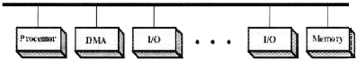
- 인터럽트 1회, 버스요청 1회
- 인터럽트 100회, 버스요청 100회
- 인터럽트 1회, 버스요청 200회
- 인터럽트 100회, 버스요청 200회
(정답률: 48%)
83. CPU가 대량의 자료 전송을 위하여 DMA에게 전송요청을 할 때 전달하는 정보가 아닌 것은?
- 전송할 워드(word) 수
- 주기억장치의 시작주소
- I/O 장치의 주소
- 버스의 전송속도
(정답률: 59%)
84. 8진수 1234는 십진수로 얼마인가?
- 278
- 565
- 668
- 1234
(정답률: 67%)
85. 정보의 표현 단위 중 문자를 표현하기 위한 것은 무엇인가?
- 비트(bit)
- 바이트(byte)
- 워드(word)
- 레코드(record)
(정답률: 66%)
86. 순차탐색(sequential search)에서 n개의 자료에 대해 평균키 비교 횟수는 얼마인가?
- n/2
- n
- (n+1)/2
- n+1
(정답률: 68%)
87. 다음 지문에 알맞은 것을 고르시오.
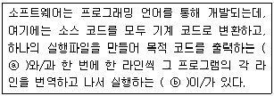
- ⓐ 컴파일러 ⓑ 인터프리터
- ⓐ 인터프리터 ⓑ 컴파일러
- ⓐ 어셈블리어 ⓑ 컴파일러
- ⓐ 인터프리터 ⓑ 어셈블리어
(정답률: 72%)
88. 컴퓨터에 글이나 그림을 그리는 작업을 위해 사용되는 소프트웨어를 무엇이라 하는가?
- 운영체제
- 유틸리티
- 응용 소프트웨어
- 시스템 소프트웨어
(정답률: 72%)
89. 시스템 내에 여러 프로세서를 통해 처리 작업을 분담하여 동시에 처리할 수 있다. 따라서 많은 양의 데이터를 처리하고, 빠르게 작업을 완료할 수 있으며, 많은 입출력 장치의 요구를 수용할 수 있다. 이와 같은 시스템은?
- 다중 처리 시스템
- 혼합 시스템
- 병렬 인터페이스
- 직렬 시스템
(정답률: 66%)
90. 다음 중 명령어 집합이 비교적 적은 컴퓨터 시스템에 사용할 기술은?
- 병렬처리
- CISC
- RISC
- 캐쉬
(정답률: 76%)
91. CPU가 어떤 프로그램을 순차적으로 수행하는 도중에 외부로부터 인터럽트 요구가 들어오면, 원래의 프로그램을 중단하고, 인터럽트를 위한 프로그램을 먼저 수행하게 되는데 이와 같은 프로그램을 무엇이라 하는가?
- 명령 실행 사이클
- 인터럽트 서비스 루틴
- 인터럽트 사이클
- 인터럽트 플래그
(정답률: 79%)
92. “전파의 전파특성을 이용하여 위치ㆍ속도 및 기타 사물의 특징에 관한 정보를 취득하는 것”으로 정의되는 것은?
- 전파측정
- 전파측위
- 무선측위
- 무선측정
(정답률: 52%)
93. “공중선전력에 주어진 방향에서의 반파다이폴의 상대이득을 곱한 것”을 무엇이라고 하는가?
- 송신전력
- 복사전력
- 공중선전력
- 실효복사전력
(정답률: 65%)
94. 다음 중 무선설비의 위탁응용 또는 공동사용을 할 수 있는 사항이 아닌 것은?
- 무선국의 공중선주
- 무선종사자
- 시설자가 동일한 무선국의 무선설비
- 송신설비 및 수신설비
(정답률: 55%)
95. 무선국의 개설허가의 유효기간이 5년이 아닌 것은?
- 실험국
- 기지국
- 간이무선국
- 아마추어국
(정답률: 72%)
96. 초단파대 해상이동업무용 주파수의 전파를 사용하는 무선설비에 장치하는 디지털선택호출장치의 선택호출신호 기준 중 시간 다이버시티의 시간 간격은?
- 0.02[sec]
- 0.03[sec]
- 0.40[sec]
- 0.50[sec]
(정답률: 40%)
97. 공중선계가 충족하여야 하는 조건이라고 볼 수없는 것은?(오류 신고가 접수된 문제입니다. 반드시 정답과 해설을 확인하시기 바랍니다.)
- 공중선은 이득이 높을 것
- 정합은 신호의 반사손실이 최소화되도록 할 것
- 수신주파수가 운용범위 이내일 것
- 지향성은 복사되는 전력이 목표하는 방향을 벗어나지 아니하도록 안정적일 것
(정답률: 42%)
98. 전파법령에서 규정한 전력선통신설비와 유도식통신설비에서 발사되는 주파수 허용편차는 얼마로 하는가?
- 0.01[%]
- 0.10[%]
- 1[%]
- 10[%]
(정답률: 30%)
99. 송신설비의 공중선, 급전선 등 고압전기를 통하는 장치는 사람이 보행하거나 기거하는 평면으로부터 몇 미터 이상의 높이에 설치되어야 하는가?
- 1.5
- 2.5
- 3.5
- 4.5
(정답률: 74%)
100. I/O 모듈의 주요 기능 또는 요구사항들 중 관계가 가장 없는 것은 무엇인가?
- 데이터 압축
- 프로세소와의 통신
- 제어와 타이밍(timing)
- 오류 검출
(정답률: 42%)